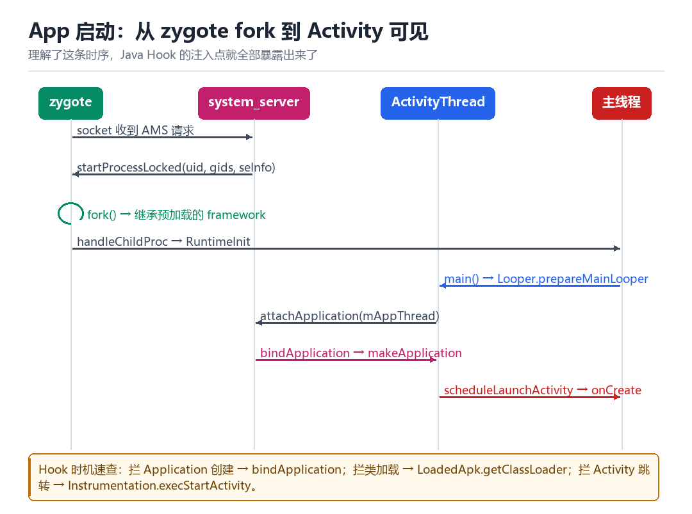
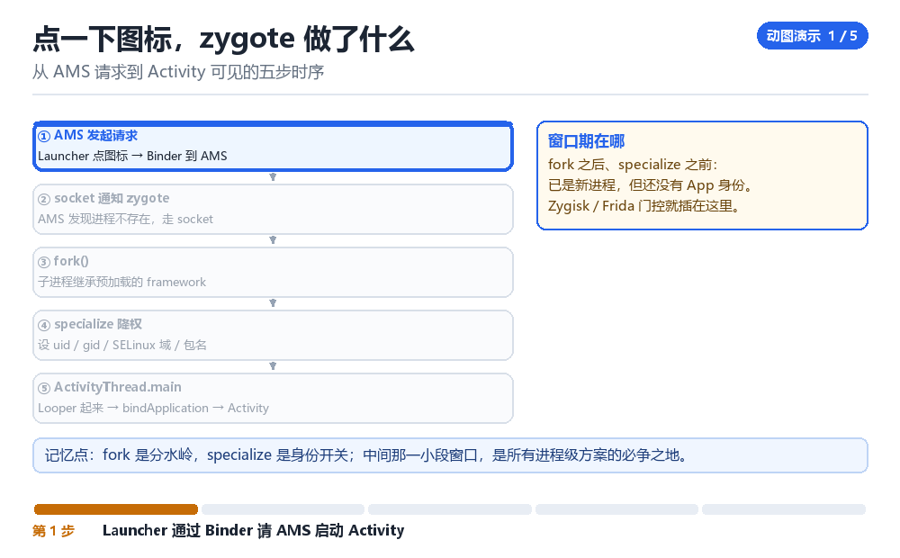

Android App 启动过程
从 zygote 开始
这一章是后面所有 Hook 内容的“地图”：知道每一步在哪，才知道能插在哪。
5.1 zygote 的准备工作
zygote 启动时做了三件影响深远的事：预加载 framework 的类（preloaded-classes）、预加载资源、启动一个 socket 服务端（zygote）。预加载让后续 fork 出的进程启动更快——因为类是共享的。
这也是为什么“注入 zygote 就能影响所有 App”：所有 App 进程都是它的 fork 产物，继承它已经加载的一切。
5.2 一次启动的完整时序

把这张图拆成六句话：
- AMS 通过本地 socket 向 zygote 发请求，带上 uid、gid、seinfo、nice 等参数。
- zygote fork 出子进程，子进程继承已加载的 framework。
- 子进程跑
RuntimeInit.commonInit()，设置默认异常处理、时区、DNS 等。 - 进入
ActivityThread.main()，创建主线程 Looper，开启消息循环。 attachApplication把ApplicationThread的 Binder 代理交给 AMS，AMS 从此可以回调这个进程。- AMS 回调
bindApplication→ 创建 Application →scheduleLaunchActivity→ onCreate/onResume。
5.3 四个可以插手的点
| 时机 | 能做什么 | 典型用途 |
|---|---|---|
| fork 之后、specialize 之前 | 读模块目录、改配置 | Zygisk pre-specialize |
| bindApplication 前后 | 替换 Application、替换 ClassLoader | 插件化、热修复 |
| ClassLoader 创建时 | 插入自定义 dex | 模块加载 |
| Activity 启动前 | 改 Intent、改启动参数 | 自动化、埋点 |
5.4 为什么类加载是核心
Java 世界里，“类从哪来”由 ClassLoader 决定。App 的 PathClassLoader 里有一个 dexElements 数组，按顺序查找类。往这个数组里插一个 dex，就等于给你的代码开了一扇门——这也是热修复与模块化方案的共同基础（见 L04）。
Java.perform(() => {
const AT = Java.use('android.app.ActivityThread');
const app = AT.currentApplication();
const cl = app.getClassLoader();
console.log('loader =', cl);
const BaseDex = Java.use('dalvik.system.BaseDexClassLoader');
console.log('dexPath =', Java.cast(cl, BaseDex).getDexPathList());
});5.5 本章自测
- zygote 预加载了哪三样东西？为什么这决定了它的战略价值？
- bindApplication 与 attachApplication 的先后顺序是什么？各自能做什么？
- 为什么“往 dexElements 插一个 dex”能实现热修复？
- 如果目标类由另一个 ClassLoader 加载，
Java.use会失败吗？为什么？
5.6 深入：Application 与 Activity 的创建顺序
很多人以为顺序是“先创建 Application，再创建 Activity”。这句话对，但不够精确：真正发生的是 LoadedApk.makeApplication 先被调用（可能由 bindApplication 触发），然后 ActivityThread 才通过 Instrumentation.newActivity 反射构造 Activity 实例。
// 1. 进程 attach 后，AMS 回调：
bindApplication(packageName, appInfo, providers, ...)
// 2. 内部：
LoadedApk.makeApplication() -> newApplication -> attach(context)
// 3. 启动 Activity 时：
Instrumentation.newActivity(cl, className, intent)
Activity.attach(...) -> onCreate(...) -> onStart -> onResume5.7 ContentProvider 的“提前”陷阱
ContentProvider 的 onCreate 在 Application.onCreate 之前执行。这意味着：如果你的 hook 逻辑依赖 Application 已初始化，但目标在 Provider 里就开始干活了，就会踩空。
| 时机 | 早于 |
|---|---|
| ContentProvider.onCreate | Application.onCreate |
| Application.attachBaseContext | Application.onCreate |
| Activity.onCreate | Activity.onStart |
5.8 原理推演：为什么“fork + 写时复制”让启动变快
App 启动的瓶颈之一是“加载 framework”。如果每个 App 都独立加载一遍，代价是几百毫秒。zygote 的做法是：只加载一次，然后 fork。fork 复制的是页表（标记 COW），所以新进程“看起来”拥有全部已加载的类，但实际上共享同一份物理内存。
| 方式 | 加载开销 | 内存占用 |
|---|---|---|
| 每进程独立加载 | 数百毫秒 | 每进程一份 |
| zygote fork | 接近 0 | 共享（COW） |
这也带来一个副作用：所有 App 进程的“已加载类”起点是一样的。所以“某个类在 App 里存在但 zygote 里不存在”这类判断，天然就是一个可用的检测维度。
5.9 数据细节：一个 App 启动期间的 Binder 调用
用 frida-trace -i ioctl 抓启动过程，会看到几十到上百次 Binder 事务。其中有几个是“必然出现”的：
| 调用 | 时机 | 用途 |
|---|---|---|
| attachApplication | attach 后立刻 | 注册 ApplicationThread |
| bindApplication | AMS 回调 | 创建 Application |
| getPackageInfo | 早期 | 读自身包信息 |
| checkPermission | 按需 | 权限校验 |
如果有人 hook 了这几个调用，就会在“启动的第一个 100ms 内”留下痕迹。这也是为什么“启动阶段”是检测与反检测的高频战场。
把镜头推到 fork 那一瞬间
从 AMS 请求到 Activity 可见的五步时序

图标被点下去，屏幕还没来得及变。此刻 Launcher 只是把一个 Intent 递了出去；真正决定「会不会多出一个进程」的，是 system_server 里那句「这个包还没有活着的进程」。再往后几十微秒，zygote 收到一条 socket 消息，执行了一条 fork——从这一瞬间开始，一个新进程带着整套 framework 的类、资源和已打开的 fd 一起出生了。把这个瞬间放慢，App 启动的全部秘密都在这条 fork 的两侧。
先纠正一个画法：zygote 从不 exec。常规 Linux 是「fork 一个新进程，再 exec 换成另一个程序」；Android 反着来——fork 之后不换程序映像，子进程继续跑 zygote 的那份代码，只是沿着不同的分支走进 RuntimeInit 与 ActivityThread.main()，然后原地降权变成某个 App。正因为不 exec，预加载的类才能被全体 App 共享。
这里还有个容易被忽略的经济账：那些预加载的类与资源页，在 zygote 里是共享的只读页，fork 时内核只把它们在新进程的页表里再指一遍，并不真的复制内存——靠的是写时复制。所以几十个 App 同时跑，framework 的代码在物理内存里大体只有一份。等到某个 App 往自己的堆上写对象，那一页才单独变成它的私有副本。这也解释了为什么 zygote 预加载的东西必须尽量只读：一旦有人在 zygote 里改了可写数据，后续所有 fork 出去的进程都会带着这份改动出生，改动面会被放大到全机。
一次冷启动，逐拍数出来
- Launcher → 对 AMS 的 Binder 代理 → 发
startActivity，带上 Intent 与 ActivityInfo → 结果：请求落到 system_server，AMS 开始查进程表。 - AMS → 对
ProcessRecord表 → 查com.target.app是否已有活进程 → 结果：查不到，决定走冷启动，把 uid/gid/seinfo/nice 等参数打包成一条 zygote 请求。 - AMS → 对
/dev/socket/zygote→ 通过本地 socket 写入参数行 → 结果：zygote 的ZygoteServer从 select 循环里被唤醒，读到一条完整的 fork 请求。 - zygote → 对自身 → 调用
fork()→ 结果：子进程诞生，继承预加载的类、资源与 fd，此刻 Uid 仍然是 0，身份还没变成 App。 - 子进程 → 对自己 → 跑 specialize：setresuid/setgid、
setcon、切 mount namespace、清 capability、改进程名 → 结果：uid 变成u0_aNNN，正式成为 App 沙箱里的进程。 - 子进程 → 对
ActivityThread.main()→ 建主线程 Looper、进入消息循环 → 结果：一个能收消息的 Java 主线程活了。 - 子进程 → 对 AMS →
attachApplication把ApplicationThread的 Binder 代理交过去 → 结果：AMS 从此有了回调这个进程的通道。 - AMS → 子进程 → 回调
bindApplication、再scheduleLaunchActivity→ 结果：Application 被创建，Activity 走完 onCreate/onResume，第一帧画出来。
动手：把冷启动的这三拍量出来
adb shell am force-stop com.target.app # 保证下次是冷启动
adb shell am start -W -n com.target.app/.MainActivity # -W 会等启动完成并打时间
adb logcat -d -s ActivityManager:I | grep 'Start proc' # 找 fork 出来的那一行
adb shell 'cat /proc/$(pidof com.target.app)/status' | grep -E '^(Name|Uid|PPid):'
adb shell ps -A -o PID,PPID,NAME | grep zygote # 对照父进程是哪一路 zygote看到 `Status: ok`、`LaunchState: COLD`、`TotalTime` 有具体毫秒数，并且 logcat 里出现 `Start proc <pid>:com.target.app/u0aNNN for activity ...`，算成功——最后那行就是 fork 完成的直接证据，而 status 里的 PPid 应该指向 zygote64（或 32 位应用的 zygote）。失败有两种：出现 Warning: Activity not started, its current task has been brought to the front，说明进程本来就在、根本没发生 fork，这次测的是热启动，要补 am force-stop；出现 Error type 3，是 Activity 类名写错或没导出，跟 zygote 无关，别往启动链上找原因。顺带一提：Start proc 那行里的 u0aNNN 就是 specialize 之后的新 uid，不是 zygote 的 0。
| 观测到的现象 | 说明发生了什么 | 该往哪一拍找 |
|---|---|---|
| logcat 有 Start proc、TotalTime 大 | 完整冷启动 | fork → specialize → bindApplication |
| TotalTime 很小、无 Start proc | 热启动，只重建 Activity | scheduleLaunchActivity 之后 |
| PPid 不是 zygote | 进程来自别的父（isolated / 子进程） | 查 AMS 的进程记录 |
| status 里 Uid 仍是 0 | 抓到了 specialize 之前的极短窗口 | fork 与 setresuid 之间 |
| Error type 3 | 组件解析失败，没走到 fork | Intent / AndroidManifest |
把「fork → specialize → bindApplication」这三个可插手的时机记牢。第 08 章会看到 Zygisk 正是卡在 forkAndSpecialize 的前后两侧做 pre / post specialize；本章用 pidof 抓到的那个 PPid 指向 zygote 的进程，到第 07 章会变成 ptrace 注入时算偏移的入口；而 dexElements 插 dex 这件事，会在第 14 章拆 dex 结构、以及第五部讲插件化时被反复用到。